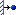

过程: 创建受力连接
“关闭窗口”(Close Window)
 “拭除未显示的”(Erase Not Displayed)
“拭除未显示的”(Erase Not Displayed) 
 Simulate_Modeling\WeightedLinks
Simulate_Modeling\WeightedLinks
 RIGID_AND_WEIGHTED_LINKS.PRT
RIGID_AND_WEIGHTED_LINKS.PRT
|
|
||
 |
Creo Parametric 用户打开 RIGID_AND_WEIGHTED_LINKS.PRT | |
|
|
||
-
任务 1. 定义受力连接。
1. 在功能区中，选择“精细模型”(Refine Model) 选项卡。
2. 从“连接”(Connections) 组中单击“受力连接”(Weighted Link)
 。将出现“受力连接定义”(Weighted Link Definition) 对话框。
。将出现“受力连接定义”(Weighted Link Definition) 对话框。
3. 按住 CTRL 键并在模型上选择点 PNT1、PNT2、PNT3 和 PNT4。这些在对话框的“独立侧”(Independent Side) 部分中列出。
4. 在“从属侧”(Dependent side) 部分中单击“点”(Point) 字段。在模型上，选择 PNT0。
5. 在“自由度”(Degrees of Freedom) 部分中，选择 Tx、Ty 和 Tz。
6. 单击“确定”(OK)。
受力连接已在 A2 和 A3 位置被定义。
7. 在功能区中，选择“精细模型”(Refine Model) 选项卡。
8. 从“连接”(Connections) 组中单击“受力连接”(Weighted Link)
。将出现“受力连接定义”(Weighted Link Definition) 对话框。
9. 按住 CTRL 键并在模型上选择点 PNT16、PNT17、PNT18 和 PNT19。这些在对话框的“独立侧”(Independent Side) 部分中列出。
10. 在“从属侧”(Dependent side) 部分中单击“点”(Point) 字段。在模型上，选择 PNT15。
11. 在“自由度”(Degrees of Freedom) 部分中，选择 Tx、Ty 并取消选择 Tz。
12. 单击“确定”(OK)。
-
任务 2. 定义刚性连接。
1. 在功能区中，选择“精细模型”(Refine Model) 选项卡。
2. 从“连接”(Connections) 组中单击“刚性连接”(Rigid Link) 。将出现“刚性连接定义”(Rigid Link Definition) 对话框。
3. 按住 CTRL 键并在模型上选择点 PNT20、PNT21、PNT22、PNT23 和 PNT24。这些在对话框的“参考”(References) 部分中列出。
4. 单击“确定”(OK)。
5. 在功能区中，选择“精细模型”(Refine Model) 选项卡。
6. 从“连接”(Connections) 组中单击“刚性连接”(Rigid Link) 。将出现“刚性连接定义”(Rigid Link Definition) 对话框。
7. 从“类型”(Type) 下拉菜单中选择“高级”(Advanced)。
8. 在模型上选择点 PNT25。此点在对话框的“独立侧”(Independent side) 部分中列出。
9. 在“从属侧”(Dependent side) 部分中单击“点参考”(Points reference) 字段。按住 CTRL 键并在模型上选择点 PNT26、PNT27、PNT28 和 PNT29。
10. 校验在“自由度”(Degrees of Freedom) 部分中已选定所有选项。
11. 单击“确定”(OK)。
12. 在功能区中，选择“精细模型”(Refine Model) 选项卡。
13. 从“连接”(Connections) 组中单击“刚性连接”(Rigid Link) 。将出现“刚性连接定义”(Rigid Link Definition) 对话框。
14. 从“类型”(Type) 下拉菜单中选择“高级”(Advanced)。
15. 在模型上选择点 PNT30。此点在对话框的“独立侧”(Independent side) 部分中列出。
16. 在“从属侧”(Dependent side) 部分中单击“点参考”(Points reference) 字段。按住 CTRL 键并在模型上选择点 PNT31、PNT32、PNT33 和 PNT34。
17. 在“自由度”(Degrees of Freedom) 部分中取消选择 Rx、Ry 和 Rz。
18. 单击“确定”(OK)。
-
任务 3. 定义约束。
1. 在功能区中，选择“主页”(Home) 选项卡。
2. 在“约束”(Constraints) 组中单击“位移”(Displacement)
 。将出现“约束”(Constraint) 对话框。
。将出现“约束”(Constraint) 对话框。
3. 从“参考截面”(References Section) 下拉菜单中选择“点”(Points)。
4. 按住 CTRL 键并在模型上选择点 PNT1 和 PNT4。
5. 在“平移”(Translation) 部分中，单击“规定的平移”(Prescribed Translation)  用于 Y 平移。在“Y 平移”(Y Translation) 字段中键入 3。
6. 在“旋转”(Rotation) 部分中，单击“固定的旋转”(Fixed Rotation) 用于 X、Y 和 Z 旋转。
7. 单击“确定”(OK)。
8. 在功能区中，选择“主页”(Home) 选项卡。
9. 在“约束”(Constraints) 组中单击“位移”(Displacement)
。将出现“约束”(Constraint) 对话框。
10. 从“参考截面”(References Section) 下拉菜单中选择“点”(Points)。
11. 按住 CTRL 键并在模型上选择点 PNT20、PNT25、PNT30 和 PNT35。
12. 在“平移”(Translation) 部分中，单击“规定的平移”(Prescribed Translation) 用于 X、Y 和 Z 平移。在 X、Y 和 Z 平移字段中键入 1。
13. 在“旋转”(Rotation) 部分中，单击“规定旋转”(Prescribed Rotation) 用于 X、Y 和 Z 旋转。在 X、Y 和 Z 旋转字段中键入 10。
14. 单击“确定”(OK)。在“警告”(Warning) 对话框中单击“确定”(OK)。
-
任务 4. 定义并运行静态分析。
1. 在功能区中，选择“主页”(Home) 选项卡。
2. 在“运行”(Run) 组中单击“分析和研究”(Analyses and Studies)
 。将出现“分析和设计研究”(Analyses and Design Studies) 对话框。
。将出现“分析和设计研究”(Analyses and Design Studies) 对话框。
3. 单击“文件”(File) > “新建静态分析”(New Static)。将出现“静态分析定义”(Static Analysis Definition) 对话框。
4. 完成以下步骤：
- 在“名称”(Name) 字段中，键入 link_demo。
- 选择显示在“约束集/元件”(Constraint Set/Component) 部分中的约束集。
- 选择“收敛”(Convergence) 选项卡，然后从“方法”(Method) 下拉菜单中单击“快速检查”(Quick Check)。
- 选择“输出”(Output) 选项卡。
- 在“绘制栅格”(Plotting Grid) 字段中，键入 2。
5. 单击“确定”(OK) 返回到“分析和设计研究”(Analyses and Design Studies) 对话框。
6. 单击“配置运行设置”(Configure Run Settings)
 。将出现“运行设置”(Run Settings) 对话框。
。将出现“运行设置”(Run Settings) 对话框。
7. 默认情况下，结果和临时输出目录被设置在工作目录中。两种分析都储存在此位置。单击“确定”(OK)。
8. 在“分析和设计研究”(Analyses and Design Studies) 对话框中，选择 link_demo，然后单击“开始运行”(Start Run)
 。单击“是”(Yes) 以运行交互诊断。
。单击“是”(Yes) 以运行交互诊断。
9. 分析完成后，单击“显示研究状况”(Display Study Status)
 查看汇总报告。
查看汇总报告。
10. 关闭所有对话框并返回到 Creo Simulate 窗口。
过程就此结束。